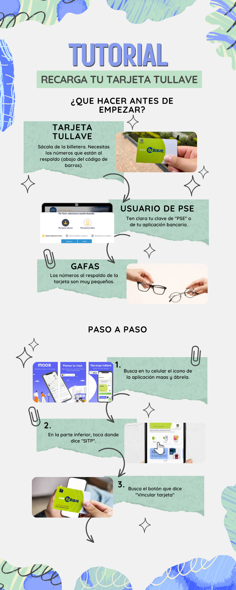
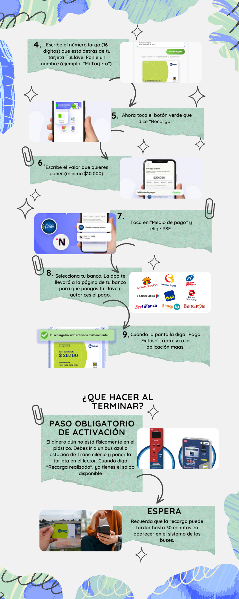

🚌 Movilidad
Aprenda a usar su tarjeta Tullave, consultar rutas de bus y pedir un viaje seguro. Seleccione el tema que necesita.
👇 Toque el tema que le interesa aprender:
Tarjeta Tullave — Personalización Web
Tarea: Registrar y personalizar su tarjeta Tullave en la página web
- Su tarjeta Tullave física en la mano (necesita el número que está al respaldo)
- Su número de cédula de ciudadanía
- Un correo electrónico activo al que tenga acceso
- Una contraseña nueva que quiera usar para su cuenta Tullave (anótela en un papel)
▶ Video tutorial: Registrar la tarjeta Tullave en la web
Si personaliza su tarjeta, si la pierde podrá recuperar el saldo. ¡Vale la pena hacerlo!
🖼 Infografía: Beneficios de personalizar su tarjeta Tullave
Aquí va la infografía de Tullave Web
Guárdela como: imagenes/infografia-tullave-web.png
Infografía: Personalización Tullave — Portal Web
📋 Pasos para personalizar su tarjeta Tullave en la página web
-
Abra el navegador y vaya a tullave.gov.co. Escriba la dirección en la barra de arriba y presione Enter.
-
Busque el botón "Regístrese" o "Crear cuenta". Está en la parte superior de la página. Haga clic en esa opción.
-
Complete el formulario con sus datos personales. Ingrese su nombre completo, número de cédula, correo electrónico y una contraseña.
-
Ingrese el número de su tarjeta Tullave. Está al respaldo de la tarjeta, generalmente en la parte inferior. Escríbalo sin espacios.
-
Verifique su correo electrónico para activar la cuenta. Recibirá un mensaje de Tullave. Ábralo y haga clic en el enlace de activación.
-
Ingrese a su cuenta con su correo y contraseña. Ahora podrá ver el saldo de su tarjeta y el historial de viajes.
- Anote en un papel su correo y contraseña de Tullave y guárdelo en un lugar seguro
- Si pierde su tarjeta, ingrese al portal y bloquéela para proteger su saldo
- Para ayuda, llame a la línea de Transmilenio: 601 429 1000
Recarga Tullave con la App MaaS
Tarea: Recargar su tarjeta Tullave desde su celular con la aplicación MaaS
- La aplicación "MaaS Bogotá" instalada en su celular (búsquela gratis en la tienda de aplicaciones)
- Su tarjeta Tullave personalizada (debe estar registrada en el portal web primero)
- Los datos de su tarjeta débito o crédito para pagar la recarga
- Saber cuánto dinero quiere recargar (mínimo consultar antes el saldo actual)
▶ Video tutorial: Recargar Tullave con la app MaaS
Le mostramos cómo recargar su tarjeta sin salir de casa, de forma rápida y segura.
🖼 Infografía: Cómo funciona la recarga virtual Tullave parte 1

Infografía: Recarga Tullave con App MaaS
🖼 Infografía: Cómo funciona la recarga virtual Tullave parte 2

Infografía: Recarga Tullave con App MaaS
📋 Pasos para recargar su Tullave con la app MaaS
-
Abra la aplicación "MaaS Bogotá" en su celular. Búsquela entre sus aplicaciones. Si no la tiene, descárguela gratis desde Play Store (Android) o App Store (iPhone).
-
Ingrese con su correo y contraseña de Tullave. Son los mismos datos que usó para registrar su tarjeta en la página web.
-
Seleccione la opción "Recargar tarjeta" o "Añadir saldo". Está en el menú principal de la aplicación.
-
Ingrese el valor que desea recargar. Escriba el monto (por ejemplo: $20.000) y toque "Continuar".
-
Seleccione la forma de pago. Puede pagar con tarjeta débito o crédito. Ingrese los datos de su tarjeta.
-
Confirme el pago y espere la confirmación. El saldo se verá reflejado en su tarjeta Tullave la próxima vez que pase por el torniquete del bus.
- Tome captura de pantalla del comprobante de recarga
- El saldo puede tardar unos minutos en aparecer en su tarjeta física
- Si el saldo no se refleja después de 24 horas, llame a Transmilenio: 601 429 1000
Dónde Viene Mi Bus — TransMiApp
Tarea: Consultar en tiempo real cuándo llegará su bus
- La aplicación "TransMiApp" instalada en su celular (es gratis en la tienda de apps)
- Activar la ubicación (GPS) de su celular para que la app sepa dónde está usted
- Saber el nombre o número de la ruta de bus que necesita
- Conexión a internet (WiFi o datos del celular)
▶ Video tutorial: Cómo usar TransMiApp para saber dónde viene el bus
Ya no tiene que esperar parado sin saber cuándo llega el bus. ¡La app se lo dice!
🖼 Infografía: Cómo leer la pantalla de TransMiApp
Infografía: Pantalla de TransMiApp explicada
📋 Pasos para consultar dónde viene su bus en TransMiApp
-
Abra la aplicación TransMiApp en su celular. Búsquela entre sus apps. Tiene el ícono de un bus rojo. Si no la tiene, descárguela gratis.
-
Permita que la app acceda a su ubicación cuando se lo pida. Toque "Permitir" para que la app sepa en qué parada o calle está usted.
-
En el mapa que aparece, verá las paradas cercanas marcadas. Toque la parada donde usted está esperando el bus.
-
Verá la lista de rutas que pasan por esa parada. Busque el número o nombre de la ruta que necesita y tóquela.
-
La app le mostrará en cuántos minutos llega el próximo bus. Por ejemplo: "Bus en 4 minutos" o "2 buses próximos". Así sabe si puede esperar o caminar.
-
También puede buscar rutas si no sabe cuál tomar. Toque el ícono de lupa 🔍 y escriba su destino. La app le sugerirá las rutas posibles.
- La app funciona mejor con WiFi o con datos del celular activados
- Los tiempos de llegada son aproximados y pueden variar por el tráfico
- También puede llamar a la línea de Transmilenio para consultar rutas: 601 429 1000
Uber
Tarea: Pedir un viaje seguro desde su celular
- La aplicación "Uber" instalada en su celular (gratis en la tienda de apps)
- Una cuenta de Uber creada con su correo electrónico y número de celular
- Su tarjeta débito o crédito registrada en la app para pagar (o pague en efectivo)
- Saber la dirección exacta a donde quiere ir
▶ Video tutorial: Cómo pedir un Uber de forma segura
Le enseñamos a pedir el carro, verificar que sea el correcto y pagar sin complicaciones.
🖼 Infografía: Cómo verificar que el carro sea el correcto
Infografía: Seguridad al usar Uber
📋 Pasos para pedir un viaje seguro con Uber
-
Abra la aplicación Uber en su celular. Toque el ícono negro con una U. Ingrese con su correo y contraseña si se lo pide.
-
En el espacio "¿A dónde vas?", escriba su destino. Escriba la dirección completa o el nombre del lugar (ej: "Clínica Marly, Bogotá"). Selecciónelo de la lista.
-
Elija el tipo de viaje según su presupuesto. Verá opciones como "UberX" (económico) o "Comfort" (más amplio). Toque la que prefiera y luego "Confirmar".
-
Espere mientras el sistema encuentra un conductor cercano. Verá en el mapa cómo el carro se acerca. La app le dice el nombre del conductor y el tiempo de llegada.
-
Cuando llegue el carro, verifique que sea el correcto ANTES de subir. Revise: la placa del carro (igual a la que muestra la app), el nombre del conductor y la foto.
-
Al llegar a su destino, revise el cobro y pague según el método configurado. Si configuró tarjeta, el cobro es automático. Si eligió efectivo, pague el monto exacto que muestra la app.
-
Califique el viaje tocando las estrellas al final. Esto ayuda a mantener la calidad del servicio. Puede hacerlo o saltarlo.
- Nunca suba a un carro cuya placa no coincida con la que muestra la aplicación
- Comparta su viaje con un familiar: en la app hay una opción "Compartir viaje" que envía su ruta en tiempo real
- Si tiene algún problema durante el viaje, llame al 123 (emergencias) o al número de un familiar